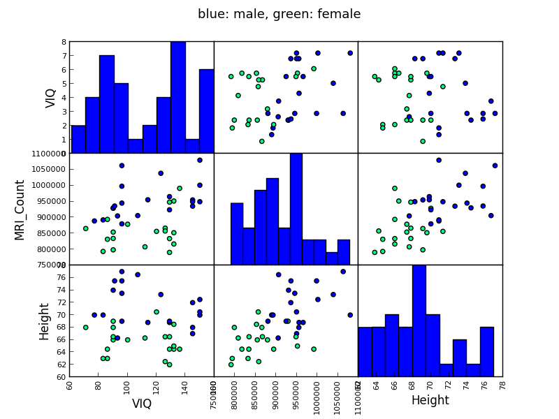

Going back to the brain size + IQ data, test if the VIQ of male and female are different after removing the effect of brain size, height and weight.
Script output:
OLS Regression Results
==============================================================================
Dep. Variable: VIQ R-squared: 0.246
Model: OLS Adj. R-squared: 0.181
Method: Least Squares F-statistic: 3.809
Date: Mon, 02 Dec 2013 Prob (F-statistic): 0.0184
Time: 22:10:29 Log-Likelihood: -172.34
No. Observations: 39 AIC: 352.7
Df Residuals: 35 BIC: 359.3
Df Model: 3
==================================================================================
coef std err t P>|t| [95.0% Conf. Int.]
----------------------------------------------------------------------------------
Intercept 166.6258 88.824 1.876 0.069 -13.696 346.948
Gender[T.Male] 8.8524 10.710 0.827 0.414 -12.890 30.595
MRI_Count 0.0002 6.46e-05 2.615 0.013 3.78e-05 0.000
Height -3.0837 1.276 -2.417 0.021 -5.674 -0.494
==============================================================================
Omnibus: 7.373 Durbin-Watson: 2.109
Prob(Omnibus): 0.025 Jarque-Bera (JB): 2.252
Skew: 0.005 Prob(JB): 0.324
Kurtosis: 1.823 Cond. No. 2.40e+07
==============================================================================
Warnings:
[1] The condition number is large, 2.4e+07. This might indicate that there are
strong multicollinearity or other numerical problems.
<F test: F=array([[ 0.68319608]]), p=[[ 0.41408784]], df_denom=35, df_num=1>
Python source code: plot_brain_size.py
import pandas
from statsmodels.formula.api import ols
data = pandas.read_csv('../brain_size.csv', sep=';', na_values='.')
model = ols('VIQ ~ Gender + MRI_Count + Height', data).fit()
print(model.summary())
# Here, we don't need to define a contrast, as we are testing a single
# coefficient of our model, and not a combination of coefficients.
# However, defining a contrast, which would then be a 'unit contrast',
# will give us the same results
print(model.f_test([0, 1, 0, 0]))
###############################################################################
# Here we plot a scatter matrix to get intuitions on our results.
# This goes beyond what was asked in the exercise
# This plotting is useful to get an intuitions on the relationships between
# our different variables
from pandas.tools import plotting
import matplotlib.pyplot as plt
# Fill in the missing values for Height for plotting
data['Height'].fillna(method='pad', inplace=True)
# The parameter 'c' is passed to plt.scatter and will control the color
# The same holds for parameters 'marker', 'alpha' and 'cmap', that
# control respectively the type of marker used, their transparency and
# the colormap
plotting.scatter_matrix(data[['VIQ', 'MRI_Count', 'Height']],
c=(data['Gender'] == 'Female'), marker='o',
alpha=1, cmap='winter')
fig = plt.gcf()
fig.suptitle("blue: male, green: female", size=13)
plt.show()
Total running time of the example: 4.76 seconds ( 0 minutes 4.76 seconds)